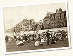

Browse Events

- 1893 Day (1)
- 50th Anniversary Celebration (19)
- 75th Anniversary Celebration (1)
- Alumni Activities (74)
- Animal Experiments (1)
- Art to Live With (9)
- Atomic Energy (8)
- Atomic Scientists (11)
- Auto Show (1)
- Awards (3)
- Campaign for Chicago (3)
- Campaign, 1968 (25)
- Campus Tours (6)
- Cancer Research Foundation (37)
- Cartoons (17)
- Cartoons, Basketball (1)
- Cartoons, University of Chicago (14)
- Chicago Lying-In Hospital (1)
- Citizens Board of Sponsors (3)
- Commerce and Administration (1)
- Commission on Freedom of the Press (1)
- Conferences (65)
- Convocations (132)
- Cosmic Radiation Research Group (35)
- Crime on Campus (2)
- Darwin Centennial (22)
- Dedications (29)
- Development (9)
- Development Campaign (8)
- Drama (2)
- Events (23)
- Executive Program (1)
- Exhibitions (348)
- Exhibitions, Crerar Library (40)
- Exhibitions, Special Collections (306)
- Experiments (18)
- Expositions (8)
- Faculty Exchanges (22)
- Faculty Honors (5)
- Faculty Luncheon (6)
- Faculty Parties (5)
- Faculty Skits (20)
- Festival of the Arts (FOTA) (5)
- Hospitals and Clinics (12)
- Hyde Park-Kenwood (27)
- Inauguration, Beadle (2)
- Inauguration, Gray (11)
- Inauguration, Hutchins (7)
- Inauguration, Kimpton (61)
- Inauguration, Levi (1)
- Jefferson Lecture in the Humanities (67)
- Lakeside Conference (21)
- Messages Françaises (63)
- Musical Activities (34)
- Norman Wait Harris Foundation (5)
- Oriental Education Commission (1)
- Oriental Institute (236)
- Outing Club (1)
- Ping Pong Match (1)
- Polish Literature Program (8)
- Portrait Presentation (17)
- Presentations (34)
- Quarter-Centennial (89)
- Radio Committee, Executive Session (1)
- Receptions (3)
- Renaissance Society (4)
- Reunion (178)
- Reunion, 1911 (4)
- Reunion, 1918 (2)
- Reunion, 1919 (4)
- Reunion, 1921 (8)
- Reunion, 1922 (26)
- Reunion, 1923 (3)
- Reunion, 1924 (1)
- Reunion, 1926 (2)
- Reunion, 1927 (2)
- Reunion, 1929 (1)
- Reunion, 1930 (15)
- Reunion, 1931 (1)
- Reunion, 1935 (1)
- Reunion, 1947 (2)
- Reunion, 1949 (1)
- Reunion, 1952 (4)
- Reunion, 1967 (3)
- Reunion, 1968 (10)
- Reunion, 1976 (82)
- Reunion, 1978 (2)
- Reunions (2)
- Rockefeller Chapel (10)
- Rosenberger Medal (150)
- Rosenberger Medal Presentation (26)
- Round Table (26)
- Science Fair (2)
- Science Open House (6)
- Settlement (3)
- Shmuzzles (3)
- Small School Talent Search (1)
- South East Chicago Commission (1)
- Symposia (4)
- Theatre, Dramatics (60)
- Two-Year High School (8)
- University Extension (15)
- University of Chicago Faculty (1)
- University of Chicago Press (3)
- University Presses (2)
- Urban Renewal (3)
- Visit, British Educational Mission (1)
- Visit, Cardinal Mercier (17)
- Visit, Edward, Prince of Wales (15)
- Visit, Jawaharlal Nehru (7)
- Visit, Jean Louis Vigier, Mayor of Paris (6)
- Visit, Marshal Joffre (14)
- Visit, Marshall Foch (3)
- Visit, Mary Pickford (1)
- Visit, Mohammad Reza Pahlavi (1)
- Visit, Olav V (29)
- Visit, President William McKinley (3)
- Visit, Prince Charles (1)
- Visit, Queen Elizabeth (3)
- Visit, Sir John Habakkuk (70)
- Visit, Vice-president Richard Nixon (1)
- Woodward Court (40)
- World Brotherhood Group (3)
- World War I (66)
- World War II (360)
- World's Columbian Exposition (170)